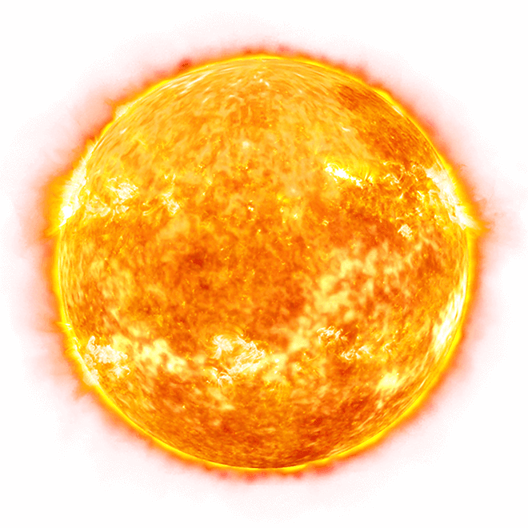

. . . . O Sol é a estrela central do Sistema Solar. Todos os outros corpos do Sistema Solar, como planetas, planetas anões, asteroides, cometas e poeira, bem como todos os satélites associados a estes corpos, giram ao seu redor.

O Sol é composto primariamente de hidrogênio (74% de sua massa, ou 92% de seu volume) e hélio (24% da massa solar, 7% do volume solar), com traços de outros elementos, incluindo ferro, níquel, oxigênio, silício, enxofre, magnésio, néon, cálcio e crômio.
Ele orbita em torno do centro da Via Láctea, atravessando no momento a Nuvem Interestelar Local de gás de alta temperatura, no interior do Braço de Órion da Via Láctea, entre os braços maiores Perseus e Sagitário. Das 50 estrelas mais próximas do Sistema Solar, num raio de até 17 anos-luz da Terra, o Sol é a quarta maior em massa.
. . . . A palavra “Sol“, nome da estrela do nosso sistema solar, é decorrente SOL, que também tinha o mesmo significado, porém sua origem vai além da Roma Antiga. SAEWEL é uma palavra do Indo-Europeu, e pode ser traduzida como “brilhar, iluminar”, este vocábulo que deu origem ao nome que conhecemos hoje.
SIM 😱
Em 4,5 bilhões de anos de vida, o Sol consumiu cerca de metade do seu hidrogênio. Isso quer dizer que ele está na metade da sua vida.
Quando o Sol tiver consumido todo o seu hidrogênio, o hélio se tornará o seu principal combustível. Acabando o seu consumo, a morte do Sol estará em curso, pois nesse momento, o astro começará a aumentar de tamanho e engolirá planetas (é o que acontecerá com a Terra). Ele ficará 100 vezes maior, até que colapsará.
Voltar para o Sistema Solar